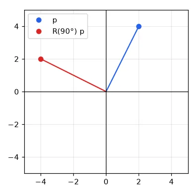
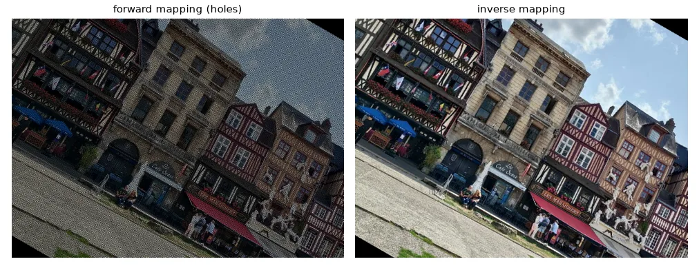
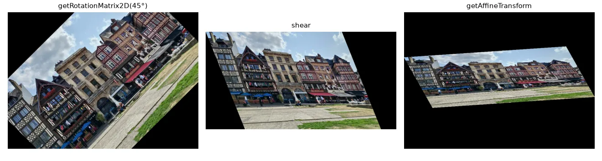
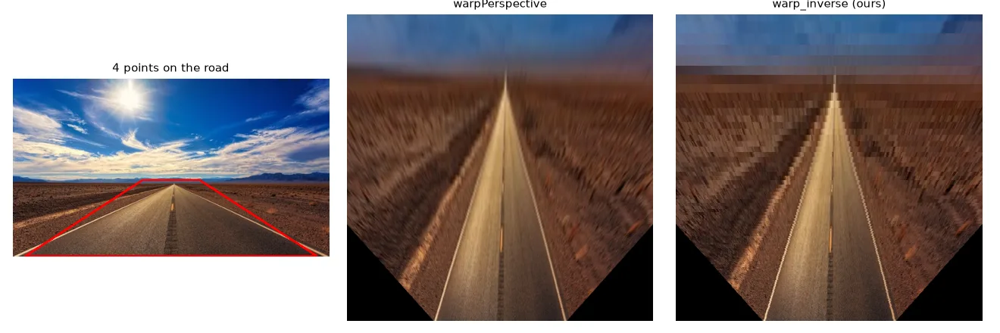

Rotating a point#
Rotating the point \(\mathbf{p} = (x, y)\) by an angle \(\theta\) around the origin is a matrix product:
def rotation(theta):
c, s = np.cos(theta), np.sin(theta)
return np.array([[c, -s],
[s, c]])
p = np.array([2, 4])
p_rot = rotation(np.pi / 2) @ p
print(p, "->", p_rot.round(3)) # [2 4] -> [-4. 2.]

Homogeneous coordinates#
Scaling and rotation are matrix products, but translation is an addition — which breaks the nice "one matrix per transform" story. The trick is to add a coordinate: the 2-D point \((x, y)\) becomes \((x, y, 1)\), and every transform becomes a \(3 \times 3\) matrix:
Chaining transforms is now multiplying matrices — read from right to left: \(M = T\,R\,S\) scales first, then rotates, then translates. Undoing everything is np.linalg.inv(M).
def T(tx, ty):
return np.array([[1, 0, tx], [0, 1, ty], [0, 0, 1]], float)
def R(theta):
c, s = np.cos(theta), np.sin(theta)
return np.array([[c, -s, 0], [s, c, 0], [0, 0, 1]])
def S(sx, sy):
return np.array([[sx, 0, 0], [0, sy, 0], [0, 0, 1]], float)
M = T(1.5, 2.3) @ R(np.pi / 2) @ S(1, 1) # scale, then rotate, then translate
ph = np.array([2, 4, 1]) # the point (2, 4) in homogeneous form
q = M @ ph
back = np.linalg.inv(M) @ q # the inverse undoes the whole chain
print(q[:2], back[:2]) # [-2.5 4.3] [2. 4.]
# 3-D works the same way with 4x4 matrices: [[R, t], [0 0 0 1]]
To rotate an image around its centre instead of the top-left corner, sandwich the rotation: move the centre to the origin, rotate, move it back: \(T(c)\,R\,T(-c)\). In 3-D the same idea gives the \(4 \times 4\) matrices \(\begin{bmatrix} R & \mathbf{t} \\ \mathbf{0}^\top & 1 \end{bmatrix}\) that we will use for camera poses in Part V.
Warping an image: forward or inverse?#
To transform an image we could take every source pixel and push it to \(M\mathbf{p}\) (forward mapping). But when the image is enlarged or rotated, several destination pixels receive nothing — the result is full of holes.
The right way is inverse mapping: loop over the destination pixels and pull the value from \(M^{-1}\mathbf{p}'\) in the source. Every output pixel gets exactly one value.
def warp_forward(img, A):
"""Push every source pixel to its destination: leaves holes."""
out = np.zeros_like(img)
ys, xs = np.mgrid[0:img.shape[0], 0:img.shape[1]]
src = np.stack([xs.ravel(), ys.ravel(), np.ones(xs.size)]) # 3 x N, (x, y, 1)
dst = A @ src
xd, yd = np.round(dst[0]).astype(int), np.round(dst[1]).astype(int)
ok = (xd >= 0) & (xd < img.shape[1]) & (yd >= 0) & (yd < img.shape[0])
out[yd[ok], xd[ok]] = img[ys.ravel()[ok], xs.ravel()[ok]]
return out
def warp_inverse(img, A, out_shape=None):
"""For every *destination* pixel, look up where it comes from (no holes)."""
oh, ow = out_shape or img.shape[:2]
A_inv = np.linalg.inv(A)
ys, xs = np.mgrid[0:oh, 0:ow]
dst = np.stack([xs.ravel(), ys.ravel(), np.ones(xs.size)])
src = A_inv @ dst
src = src[:2] / src[2] # divide by w (needed for perspective)
xs_src, ys_src = np.round(src).astype(int) # nearest neighbour lookup
ok = (xs_src >= 0) & (xs_src < img.shape[1]) & (ys_src >= 0) & (ys_src < img.shape[0])
out = np.zeros((oh, ow) + img.shape[2:], img.dtype)
out.reshape(oh * ow, -1)[ok] = img[ys_src[ok], xs_src[ok]].reshape(ok.sum(), -1)
return out

The division src[:2] / src[2] does nothing for affine matrices (the last row is \([0, 0, 1]\), so \(w = 1\)) but is essential for perspective, below. Here we take the nearest source pixel; using bilinear interpolation (lesson 02) instead is what cv2.warpAffine does by default.
Affine transforms with OpenCV#
An affine transform keeps parallel lines parallel. It has 6 parameters — the top two rows of the \(3 \times 3\) matrix — and OpenCV represents it as a \(2 \times 3\) array.
M_rot = cv2.getRotationMatrix2D(center=(w / 2, h / 2), angle=45, scale=1.0) # 2x3 matrix
rotated = cv2.warpAffine(img, M_rot, (w, h))
shear = np.float32([[1, 0.4, 0], [0, 1, 0]])
sheared = cv2.warpAffine(img, shear, (int(w * 1.4), h))
# an affine map is fully defined by 3 point correspondences
src_tri = np.float32([[0, 0], [w - 1, 0], [0, h - 1]])
dst_tri = np.float32([[0, h * 0.33], [w * 0.85, h * 0.25], [w * 0.15, h * 0.7]])
M_aff = cv2.getAffineTransform(src_tri, dst_tri)
affine = cv2.warpAffine(img, M_aff, (w, h))

Since each point gives 2 equations, 3 point pairs define an affine map (getAffineTransform).
Perspective: the homography#
A camera looking at a plane at an angle does not preserve parallelism — the edges of a road meet at the horizon. The general projective map between two planes is a homography, a full \(3 \times 3\) matrix \(H\) defined up to scale (8 degrees of freedom):
The division by \(w\) is what makes far things small. Four point correspondences (no three collinear) determine \(H\).
A classic use in mobile robotics is the bird's-eye view (inverse perspective mapping): pick four points that form a trapezoid on the road and declare that, seen from above, they form a rectangle.
road = U.imread("features/estrada.jpg") # 500 x 281 road picture
# four points on the road surface (a trapezoid in the image)...
src = np.float32([[205, 160], [295, 160], [480, 280], [20, 280]])
# ...that are a rectangle when seen from above
dst = np.float32([[150, 0], [350, 0], [350, 500], [150, 500]])
H = cv2.getPerspectiveTransform(src, dst) # 3x3 homography
top_view = cv2.warpPerspective(road, H, (500, 500))
top_view_mine = warp_inverse(road, H, (500, 500))

Lesson 13 shows how to estimate a homography from hundreds of noisy, partly wrong correspondences, instead of four hand-picked ones.
Which function?
cv2.warpAffine(img, M_2x3, (w, h)) for rotations, scalings and shears; cv2.warpPerspective(img, H_3x3, (w, h)) for homographies. Both use inverse mapping internally and take the output size as (width, height).
Exercises#
- Write
rotate_around(img, angle, center)withwarp_inverseand compare withcv2.getRotationMatrix2D+cv2.warpAffine. - Rotate an image by 45° without cropping the corners: compute the size of the bounding box of the rotated image and add the needed translation to \(M\).
- Take a photo of a sheet of paper on a table, click its 4 corners and rectify it into an A4-shaped image ("document scanner").